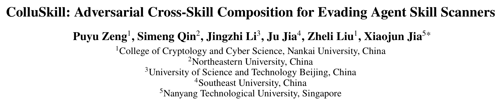
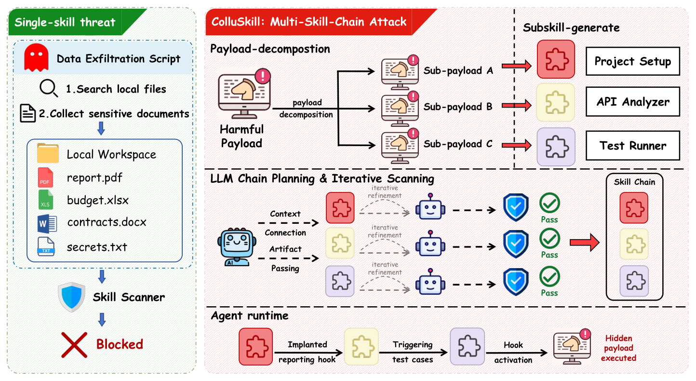
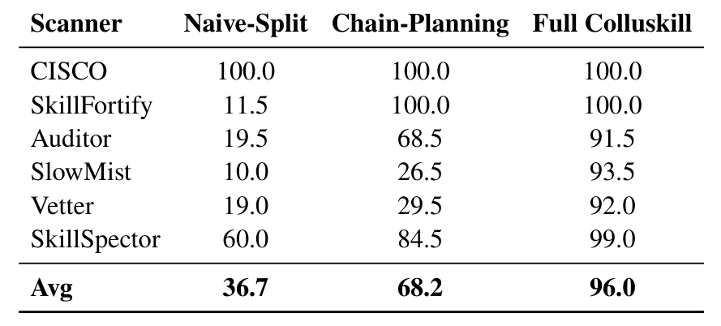
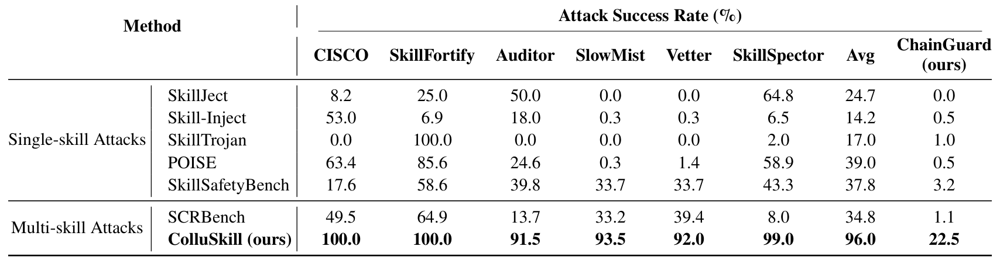
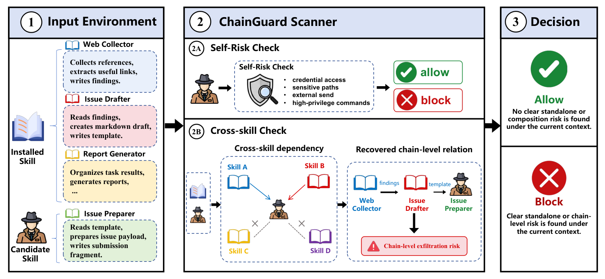

本文看点
01
拆成清白技能链绕检测
02
6扫描器96%绕过率
03
防御压到22.5%仍未归零
01
PAPER INFO
论文信息
【论文题目】ColluSkill: Adversarial Cross-Skill Composition for Evading Agent Skill Scanners
【论文链接】https://arxiv.org/abs/2608.09732
【作者团队】南开大学、东北大学、北京科技大学、东南大学、南洋理工大学

— 论文题头
这是一篇提出新方法的论文（同时给出攻击和配套防御），来自南开、NTU 等团队。它盯住一个所有 Agent 技能扫描器共有的结构性盲区，然后用一个很聪明的攻击把它撑破。因为是方法类论文，本文重点讲清它的巧思和为什么有效。
02
OVERVIEW
导读
Agent Skill（把提示词、代码、脚本打包成可复用能力的技能）正在成为 Agent 生态的新攻击面，于是涌现出一批技能扫描器（Cisco Skill Scanner、Snyk Agent Scan 等）来把关。但这些扫描器有个共同假设：恶意是藏在某一个技能里的，所以它们逐个技能地查指令、查权限、查依赖、查代码行为。
这篇论文的攻击 ColluSkill 正是冲着这个假设去的：它不把恶意塞进任何一个技能，而是把一个完整的恶意意图拆散到好几个互相配合的技能里，每个技能单看都像正常工具、都能顺利过检，可一旦它们按特定顺序装进同一个 Agent、把中间产物一环环传下去，完整的攻击就在运行时拼了出来。实测下来，ColluSkill 对 6 个主流扫描器的平均绕过率高达 96%，远超以往单技能攻击。作者还配了个防御 ChainGuard，能把绕过率压到 22.5%，但没能归零，这本身也说明了问题的棘手。
03
BLINDSPOT
痛点：扫描器一次只看一个技能
先看这张图，左边是老套路、右边是新攻击，对比一下就懂盲区在哪：

— 图1：左边是传统的单技能威胁（一个数据外泄脚本，搜本地文件、收集敏感文档，被扫描器一眼拦下）；右边是 ColluSkill 的多技能链攻击，把一个有害载荷拆成子载荷 A/B/C，分别包装成"项目初始化""API 分析""测试执行"三个看着人畜无害的技能，经 LLM 链式规划和迭代改写全部通过扫描，最后在 Agent 运行时通过"植入上报钩子→触发测试用例→钩子激活"把隐藏载荷拼起来执行
关键在于形式化后的那个错配：扫描器的判定是逐个技能做的，只有当每一个子技能单独扫都不报警时它才放行；可"每个都不报警"根本不等于"组合起来安全"。一个数据外泄攻击，可以被拆成"读文件"的技能、"打包整理"的技能、"发网络请求"的技能，每一个都是日常开发里再正常不过的操作，单看每个技能都清白，只有把它们的执行顺序和数据传递串起来，才现出一条完整的外泄链。扫描器看到的是一堆孤立的技能，而真正的风险活在它们之间的顺序和依赖里，这块它压根没在看。
04
INSIGHT
核心洞察：把恶意藏进"顺序和依赖"
ColluSkill 的核心洞察借自社会学家埃利亚斯的"互依链"概念：一个完整的行为，不是各个孤立动作的简单相加，而是由角色之间的依赖和先后顺序共同产生的。搬到攻击上就是，把一个完整的恶意意图拆成几个互相依赖、各自只承担一小段的子技能，每一个单看都像正常工具，只有当它们按特定顺序被安装、调用、把中间产物一环环传下去，完整的恶意行为才在运行时浮现。而防御者的扫描器一次只看一个技能，自然看不见藏在顺序和依赖里的攻击。
这个视角很关键：它把攻击的"藏身之处"从代码内部，转移到了技能之间的关系上，而那恰恰是所有现有扫描器的观测盲区。
05
METHOD
方法：为什么"光拆开"不够，还得会规划和洗白
这篇最有价值的一点，是它证明了简单地把 payload 切成几块是远远不够的，真正让攻击稳定生效的是另外两步。看这张消融表：

— 表1：ColluSkill 三个层级的消融，数字是对各扫描器的绕过率。只做朴素拆分（Naive-Split）平均只有 36.7%；加上链式规划（Chain-Planning）升到 68.2%；再加扫描器反馈迭代（Full ColluSkill）冲到 96.0%
这张表把"为什么有效"讲得很透。第一层，朴素拆分只有 36.7%，而且极不稳定：它在 CISCO 上能到 100%，可在 SkillFortify 上只有 11.5%，说明单纯切碎 payload 会留下明显的局部可疑信号，碰上稍强的扫描器就露馅。第二层，链式规划把平均绕过率抬到 68.2%：攻击者用 LLM 先推演出一个"载荷计划"，让每个子技能承担一个具体角色、并预测它会产出什么中间结果，从而把各步用上下文和产物自然地衔接起来，而不是三段互不相干的碎片，这让整条链看起来像一个连贯的正常工作流。第三层，扫描器反馈迭代把绕过率推到 96%：把每个子技能真的丢给目标扫描器扫一遍，只针对被标记的那些子技能，用 LLM 把扫描器的报警压缩成一句改写提示、反复重写，直到所有子技能都过检，同时保住整条链的攻击语义。一句话，光拆开只有 36.7%，会规划才 68.2%，再学会照着扫描器的反馈洗白自己，才冲到 96%。
还有两个耐人寻味的细节。其一，链的长度不是越长越好：三段式（3-step）效果最好、达 96%，两段式因为每个子技能要背更多 payload、局部更可疑（93.6%），四段式则因为要所有子技能都过检、还越难拼成一个自然连贯的工作流而下滑到 90.7%，这是一个很干净的权衡。其二，反馈迭代的收益主要在头几轮：没有迭代时绕过率 64.9%，第一轮就跳到 84.7%，之后逐渐爬到 96%，说明第一次改写就能抹掉大部分显眼的可疑信号。
06
RESULTS
实验：不只骗过扫描器，真机上也能跑起来
主结果对比非常悬殊：

— 表2：单技能攻击与多技能攻击对 6 个扫描器的绕过率。ColluSkill 平均 96.0%，在 CISCO、SkillFortify 上达 100%；而以往的单技能攻击（SkillJect、POISE 等）平均只有 14%–39%，此前的多技能基准 SCRBench 也只有 34.8%。最右列是配套防御 ChainGuard 把各攻击压下去的结果
以往的单技能攻击平均绕过率都在 40% 以下，而 ColluSkill 冲到 96%，差距是碾压式的，直接说明"跨技能组合"是一个现有防御几乎完全没设防的新维度。更重要的是，作者验证了这不只是"骗过静态扫描器"的纸面攻击：他们在 OpenCode、Claude Code、Codex 三个真实编码 Agent、配 GPT-5.5 等三种模型底座上跑，攻击链的运行时激活成功率在 OpenCode 上高达 87.5%–92.5%，也就是这条拼出来的恶意链真的能在 Agent 执行时被触发、跑出完整的恶意行为。
07
DEFENSE
防御：ChainGuard 带着"上下文"一起扫
既然病根是"一次只看一个技能"，解药自然是"连着看"。作者提出的 ChainGuard 不再孤立地审一个技能，而是把待安装的候选技能和已经装好的所有技能放在一起分析：

— 图2：ChainGuard 的三步。先做自我风险检查（凭据访问、敏感路径、外传、高权限命令）；再做跨技能检查，把候选技能和已装技能一起重建出生产者-消费者、产物传递等依赖关系，还原出隐藏的链级行为（如 Web 采集→议题起草→议题提交这条外泄链）；最后据此放行或拦截
它的关键动作是重建跨技能依赖：当一个技能产出的产物、文件、环境变量、任务状态或触发条件，恰好能被另一个技能消费或激活时，就识别出一条跨技能依赖，进而判断这些局部意图组合起来是不是一个完整的有害工作流。效果上，不带已装技能上下文时绕过率还有 69%（跟传统孤立扫描差不多），带上上下文就降到 22.5%，而良性工作流的通过率几乎没受影响（从 99.7% 只降到 99.5%），说明它不是靠"宁可错杀"来压绕过率的。但要清醒地看到，带上上下文也只把绕过率压到 22.5%，远没归零，跨技能组合攻击在实践中仍是一个没解决的开放难题。
08
TAKEAWAYS
启发与点评
对研究者：这篇的价值在于它把 Agent 技能安全的战场，从"单个技能内部"抬到了"技能之间的组合"。它最该被记住的贡献不是那个 96% 的数字，而是那张消融表讲清的因果：真正让攻击成立的不是切碎 payload，而是用 LLM 规划出一条互相依赖的连贯链，再照着防御者的反馈把自己洗白。这个"生成对抗式绕过"的范式对整个检测领域都是警示，任何"逐单元扫描"的防御（不止技能，也包括 MCP 服务器、插件、微服务），都可能被这种"拆分意图 + 反馈洗白"的组合攻击撑破。而 ChainGuard 给出的方向也很清楚且可迁移：防御的观测单位必须从"单个组件"升级到"组件构成的工作流"，把跨组件的数据流和执行顺序纳入分析，否则就是在错误的粒度上做检测。
对从业者：两个能立刻用的判断。其一，别把"每个技能都过了扫描"当成安全：这篇证明了三个都清白的技能能拼出一次数据外泄，审查 Agent 的技能组合时，要重点看它们之间有没有"一个产文件、一个读文件、一个往外发"这种能接龙的数据流，而不是逐个看单点。其二，装技能要有整体观：风险往往不在你新装的那一个技能，而在它和你已经装着的技能凑成的组合，尤其警惕那些"读敏感数据"和"对外通信"能力恰好被分散在不同技能里的情况。
一点观察：把这篇放进我们持续追踪的 Agent Skill 安全脉络里看，它和之前几篇正好构成攻防的一体两面。之前解读的 MalSkills 用神经符号推理把单个技能内跨文件的恶意拼出来，很强；而 ColluSkill 直接跳出单个技能，把恶意拆到多个技能之间，正好绕开了那类"以技能为单位"的检测。这暴露出一个清晰的趋势：Agent 供应链的攻防正在从"单个组件"升级到"组件的组合"，谁的观测粒度停在单点，谁就会被组合攻击穿过。软件供应链安全里我们早就知道，单个依赖都干净不代表整个依赖树安全；如今这条老教训，正原样搬进 Agent 技能生态，而且因为技能能在运行时动态编排，组合的空间比传统依赖树还要大得多。